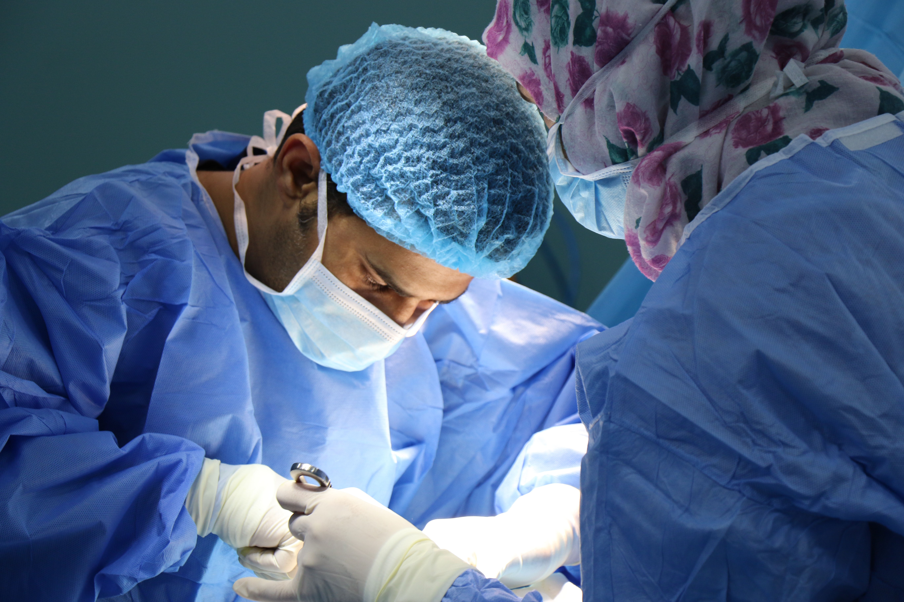

WEB
- HTML
- HERNIORRHAPHY
Laparoscopic Herniorrhaphy
Surgery Overview
Laparoscopic hernia repair is similar to other laparoscopic procedures.
General anesthesia is given, and a small cut (incision) is made in or just below the navel. The abdomen is inflated with air so that the surgeon can see the abdominal (belly) organs.
A thin, lighted scope called a laparoscope is inserted through the incision. The instruments to repair the hernia are inserted through other small incisions in the lower abdomen. Mesh is then placed over the defect to reinforce the belly wall.
There are many things to think about when deciding if you should have inguinal hernia repair surgery, such as whether your hernia is incarcerated or strangulated and whether you have other conditions that need to be addressed before hernia repair surgery is appropriate.
Laparoscopic hernia repair is different from open surgery in the following ways
•A laparoscopic repair requires several small incisions instead of a single larger cut.
•If hernias are on both sides, both hernias can be repaired at the same time without the need for a second large incision. Laparoscopic surgery allows the surgeon to examine both groin areas and all sites of hernias for defects. Also, the patch or mesh can be placed over all possible areas of weakness, helping prevent a hernia from recurring in the same spot or developing in a different spot.
•General anesthesia is needed for laparoscopic repair. Open hernia repair can be done under general, spinal, or local anesthesia.
